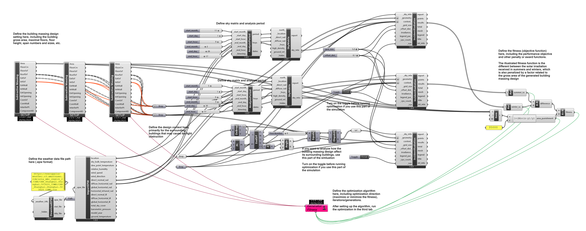
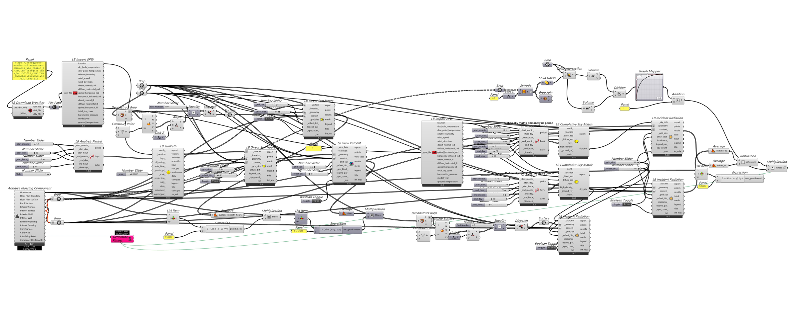
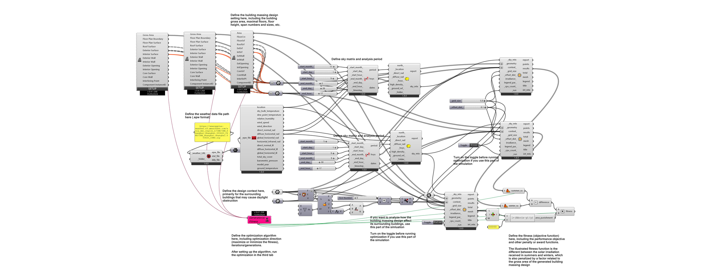
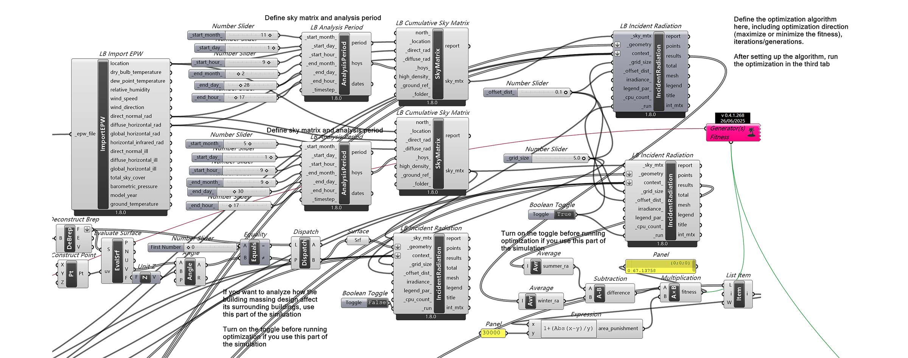
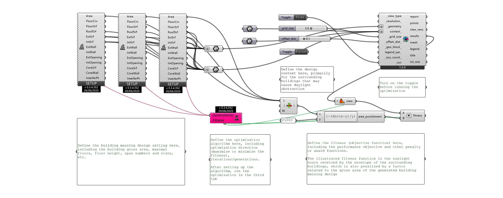
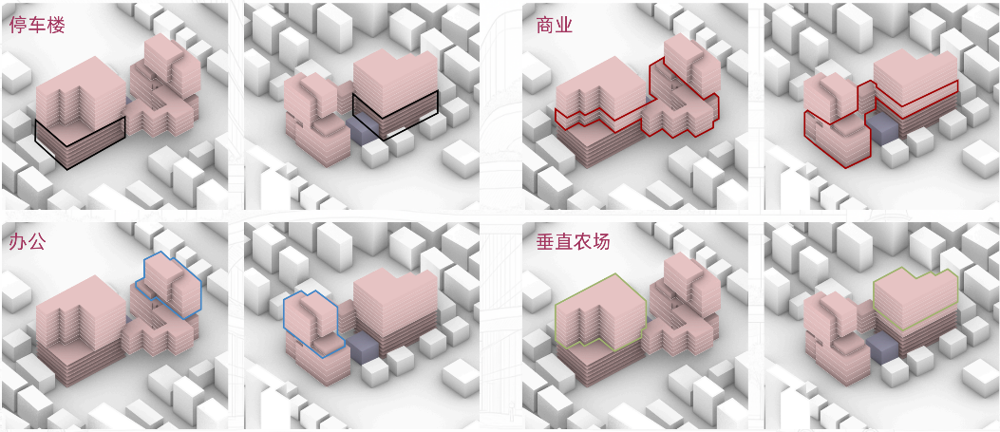
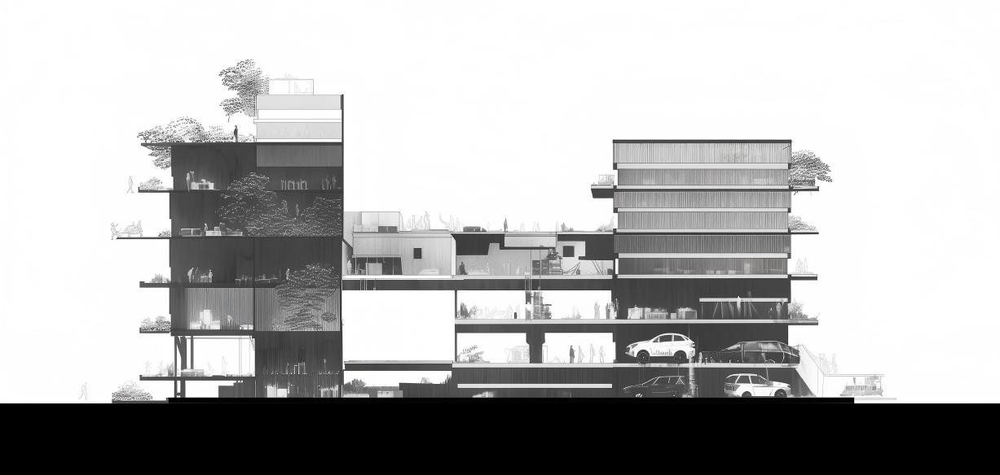

01 / 政府
公共責任
歷史延續、公共空間、環境責任，以及方案與城市之間清晰可讀的關係。
AI Green Nexus City
一項城市設計研究：以政府、開發商和居民的模擬立場參與方案比選，並使用 AI 輔助建築與景觀設計的深化。

設計流程結合任務要求、環境資訊、模擬協商與計算分析。以下兩張圖呈現從設定目標、生成候選方案到比選與深化的步驟。


在武夷路 155 號的設計中，我以模擬協商組織方案決策。政府、開發商和居民的立場分別關注公共責任、運營價值與日常使用，並共同討論歷史延續與環境品質。
方案選定後，我使用 AI 探索建築形式、立面與景觀的不同表達，並將生成結果與原有空間設計對照。

01 / 政府
歷史延續、公共空間、環境責任，以及方案與城市之間清晰可讀的關係。
02 / 開發商
功能混合、可使用面積、垂直農場，以及投入與使用之間可成立的關係。
03 / 居民
可達性、視線、開放空間、人的尺度與日常生活面對新介入時的感受。
政府、開發商與居民的模擬立場共同參與方案比選，討論建造規模、歷史保留、視覺通廊，以及公共空間與生產性空間的配置。
我使用 EvoMass 生成候選體量，再依據上述需求比較方案、篩選並重組空間特徵。
將政府、開發商和居民的立場放入同一張決策框架。
通過參數和 EvoMass 的加法、減法操作生成候選體量。
同時觀察功能適配、視覺通廊、公共可達性與環境條件。
保留適合場地需求的空間特徵，重組後繼續深化。








選定體量後，使用 AI 探索立面與景觀的不同表達。
以選定體量為基礎，我使用 AI 探索立面、綠色通廊和景觀的不同表達。
生成圖像用於設計討論與視覺推敲，不能替代施工圖或性能驗證。我逐一核對圖像與選定體量、功能及空間關係的吻合程度，再篩選可用的設計內容。
以選定體量及其空間關係作為生成條件。
探索建築形式、立面語言、種植、材料和空間氛圍。
檢查每張圖像是否仍然支持既定的功能、流線和城市關係。
將有價值的視覺想法帶回方案、圖紙和最終呈現。


最終方案綜合了模擬協商中的需求與 AI 探索所得的設計內容。以下圖紙呈現功能配置、流線、豎向組織，以及建築與周邊街區的關係。





三張局部效果圖分別呈現建築邊界、街道介面與內部空間。


完整展板匯集模擬決策、計算分析、AI 輔助深化與最終方案，可結合下方單頁 PDF 閱讀。